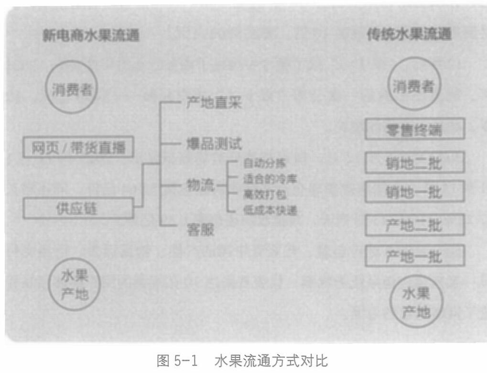

供应链，服务零售端，控制厂家。
比如水果这个品类，之前从果园到最终用户要经过5个甚至更多的环节。水果要被搬进搬出5家不同的库房¹--产地一批、产地二批、销地一批、销地二批、零售终端，最后通过形形色色的零售终端，如水果店、菜市场、路边摊等，到达最终用户手里。
而被电商改造后的水果交易，从果园到最终用户只需要经过两个环节：供应链和零售终端(见图5-1)。
供应链一端连接原产地，一端对接有流量的销售终端，为主播们提供货盘²支持。

1 其中一批、二批指一级批发市场、二级批发市场。
2 一般是指电商货盘，包括商品价格、成本价格、库存数量、产品序号、产品名称等。
086